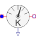

RelTemperatureSensorTemperature difference sensor |

|
Information
This information is part of the Modelica Standard Library maintained by the Modelica Association.
The RelTemperatureSensor measures the temperature difference between flowPort_a and flowPort_b.
Thermodynamic equations are defined by Interfaces.RelativeSensorBase.
Note: Connected flowPorts have the same temperature (mixing temperature)! Since mixing my occur, the outlet temperature of a component may be different from the connector's temperature. Outlet temperature is defined by variable T of the corresponding component.
Parameters (1)
| medium |
Value: FluidHeatFlow.Media.Medium() Type: Medium Description: Sensor's medium |
|---|
Connectors (3)
| flowPort_a |
Type: FlowPort_a |
|
|---|---|---|
| flowPort_b |
Type: FlowPort_b |
|
| y |
Type: RealOutput Description: Temperature difference as output signal |
Components (1)
| medium |
Type: Medium Description: Sensor's medium |
|---|